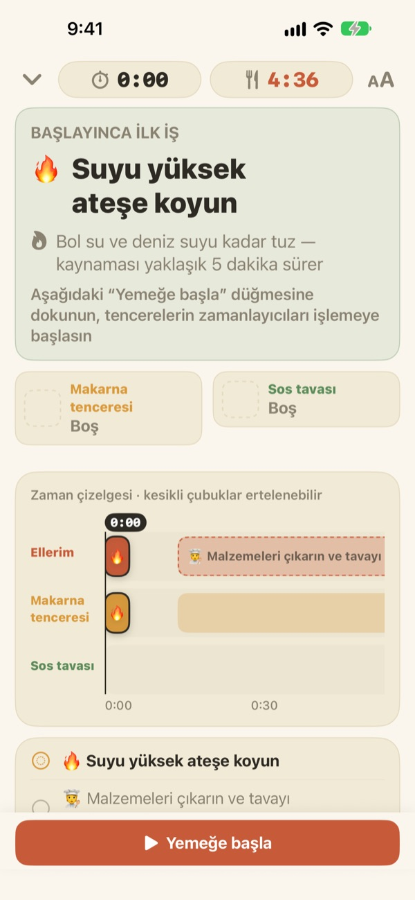
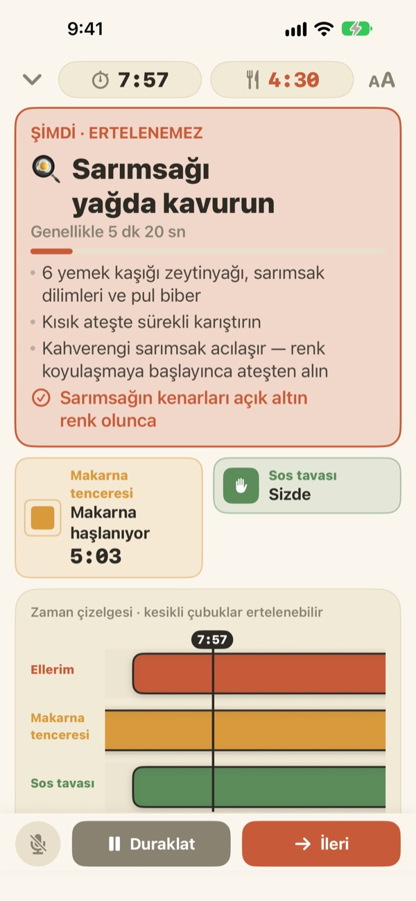
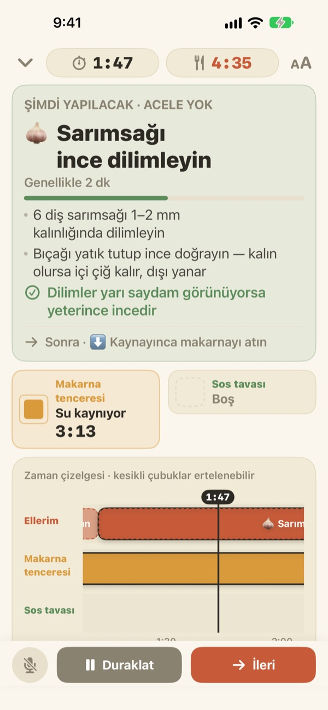
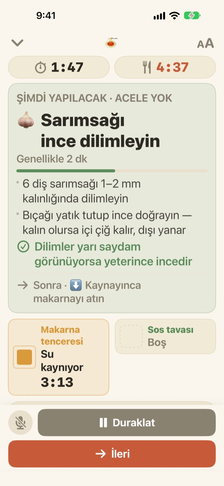

Makarna haşlanırken
sos da hazır
İki tencere farklı hızda giderken Geusaie, ellerinin şu an yapması gereken tek işi büyük harflerle gösterir. Sos, makarnanın süzüleceği andan geriye doğru zamanlanır.
Tüm özellikler ücretsiz. Hesap gerekmez.

Kendin dene
Bir tabak aglio e olio'yu 20 kat hızla pişir. Yemeğe başla'ya dokun, ardından bir işi bitirmiş sayıldığın her an İleri'ye dokun. Makarnayı süzme vakti gelince kartın nasıl değiştiğine de bak.
Üç zamanlayıcı kurdun, makarna yine de mi lapa oldu?
Makarnaya bir zamanlayıcı, sosa bir zamanlayıcı, sarımsağın süresi de aklında; bir noktada hangisinin önce geldiğini karıştırırsın. Sarımsak doğrarken makarnayı süzme anını kaçırırsın, sos da makarnadan iki dakika geç hazır olur. Geusaie tarifi "önce bu, sonra şu" diye bilir, bu yüzden sana yalnızca şimdi yapman gereken tek işi söyler.
Bekleyemeyecek iş gelince kart kırmızıya döner
Makarnayı süzmek, yanmak üzere olan sarımsak: Geciktiğinde yemeği bozacak bir iş geldiğinde kart kiremit rengine döner ve doğrama işini bir kenara bırakmanı söyler.
Bir tencere hazır olduğunda ekrana bakmıyor olsan bile bildirim gelir, hemen yapman gereken işle birlikte.

Doğrama, elin boşken
Sarımsak dilimlemek, peynir rendelemek, ölçmek: Bunların saati yok, bu yüzden saniye saymaz. Çubuk ellerin boşken dolar, bir tencere seslenince durur, döndüğünde kaldığı yerden devam eder.
Ocağı üç dakika geç yakarsan sonraki her şey de üç dakika kayar. Plan, gerçekte ne zaman ne yaptığına göre her seferinde yeniden hesaplanır.

Tezgâha yasla, sesinle ilerle
Bir iki adım uzaktan okunabilsin diye yazı boyutu dört kademe büyür, pişirirken ekran kapanmaz.
Ellerin ıslak mı? ileri de, ekrana dokunmadan sonraki işe geçsin.

Üç adımda başla
- 1
Yemeği seç
Ne kadar süreceğine ve kaç tencere gerektiğine bakman yeterli.
- 2
Yemeğe başla'ya dokun
Önce ilk işini gösterir; dokunduğun an tencerelerin saati işlemeye başlar.
- 3
Bitti mi? İleri.
Düğmeye dokun ya da "ileri" de, sıradaki iş gelsin.
Renk, ne kadar acil olduğunu söyler
- Yeşil
- Hazırlık işi. Acele etme.
- Hardal
- Sıra tencerede. Şimdi yap, ama telaş yok.
- Kiremit
- Beklersen makarna lapa olur ya da sarımsak yanar. Şimdi yap.
- Tencere kutuları
- Küçülen kare kalan süredir. Tencerelerin süresi asla gizlenmez.
Zaman çizelgesinde kesikli çubuklar, bekleyebilecek işlerdir.
Tüm özellikler ücretsiz
Ücretsiz
- İki tarifin tamamı
- Her tencere için ayrı zamanlayıcı ve tüm zaman çizelgesi
- Tencere hazır olunca bildirim
- Sesle "ileri"
- Dört yazı boyutu
- Siri ve Kestirmeler ile tarifi aç
Geliştiriciye destek ol (isteğe bağlı)
- Uygulama işine yaradıysa Ayarlar'dan küçük bir bahşiş gönderebilirsin
- Bahşiş hiçbir şeyin kilidini açmaz. Göndermesen de tüm özellikler senin
Tek seferlik bahşişler, abonelik değil.
Hesap yok, reklam yok ve internet olmadan da çalışır.
Sık sorulan sorular
"İleri" diyorum ama geçmiyor.
Sol alttaki mikrofon düğmesi dinlerken kırmızı, kapalıyken gridir. İlk seferde hem mikrofona hem konuşma tanımaya izin vermelisin; reddettiysen Ayarlar uygulaması > Geusaie'den yeniden açabilirsin. Uygulama, İleri düğmesinde yazan kelimeyi dinler. Mutfak çok gürültülüyse alttaki İleri düğmesine dokun.
Tencere hazır oldu ama bildirim gelmedi.
Ayarlar > Bildirimler > Geusaie'de bildirimlerin açık olduğunu kontrol et. Odak modu açıksa ses çıkmayabilir. Bildirimler yalnızca bir tencere hazır olduğunda gelir; doğrama, rendeleme gibi hazırlık işleri seni sıkıştırmamak için bildirim göndermez.
Geç başlarsam plan ne olur?
Gerçekte ne zaman ne yaptığına göre yeniden hesaplanır. Ocağı üç dakika geç yakarsan sonraki işler de üç dakika kayar; sos ise makarnanın süzüleceği andan geriye doğru zamanlanmaya devam eder.
Yazılar çok küçük.
Pişirme ekranında sağ üstteki yazı boyutu düğmesine dokun ve Normal, Büyük, Daha büyük ya da En büyük'ü seç. Seçimin hatırlanır.
Pişirirken ekran kapanır mı?
Hayır. Pişirirken ekran açık kalır, böylece ıslak ellerle ekrana dokunman gerekmez.
Hangi yemekler var?
Aglio e olio (yaklaşık 15 dakika, 2 tencere) ve domatesli kremalı makarna (yaklaşık 20 dakika, 2 tencere). Serious Eats, Gimme Some Oven, RecipeTin Eats ve The Burnt Butter Table tariflerinden yararlanıldı. İki tencerenin aynı anda kaynadığı her yemek uygundur, görmek istediğin tarifi bize yaz.
Sesim kaydediliyor mu?
Hayır. Uygulama yalnızca "ileri" kelimesini dinler, ses kaydetmez ve saklamaz. Cihaz destekliyorsa konuşma tanıma yalnızca cihazda yapılır. Kişisel veri toplanmaz.
Siri ile açabilir miyim?
Evet. Siri'de ya da Kestirmeler uygulamasında bir yemek seçtiğinde o yemeğin pişirme ekranı hemen açılır. Saatler, suyu koymaya hazır olup Yemeğe başla'ya dokunduğunda başlar.
Hangi cihazlarda çalışır?
iOS 17 veya sonrası yüklü iPhone ve iPad'de. Hesap ya da internet bağlantısı gerekmez.
Sorun bildirmek ya da tarif önermek için ne yapmalıyım?
Uygulamadaki Ayarlar > Geri Bildirim Gönder bölümünü kullan ya da aşağıdaki adrese e-posta gönder. Cihaz modelini ve iOS sürümünü eklersen daha hızlı bakabiliriz. Genellikle birkaç gün içinde yanıt veririz.
Takıldığın, tuhaf bulduğun ya da eklenmesini istediğin bir tarif mi var? leeo@kakao.com adresine yaz.